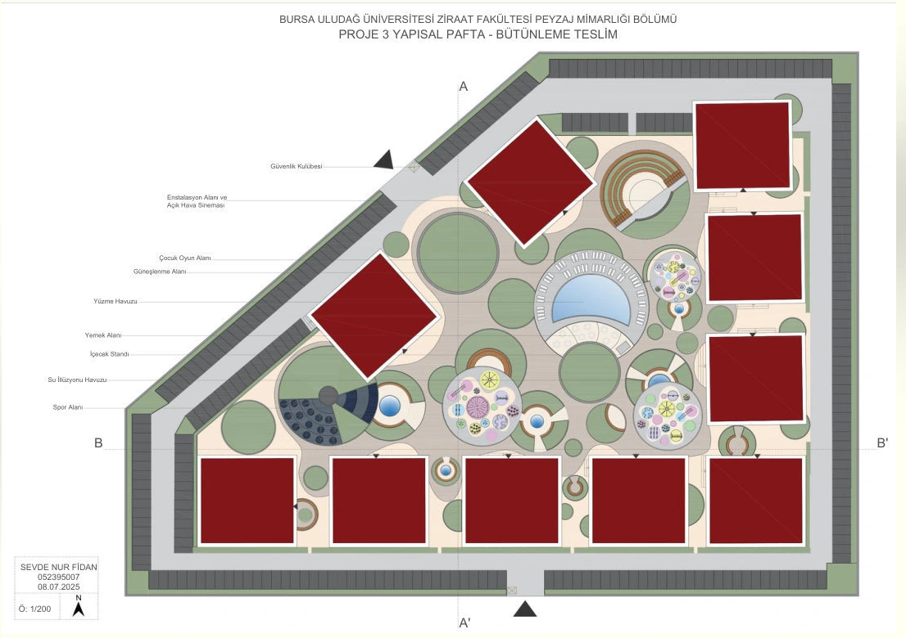
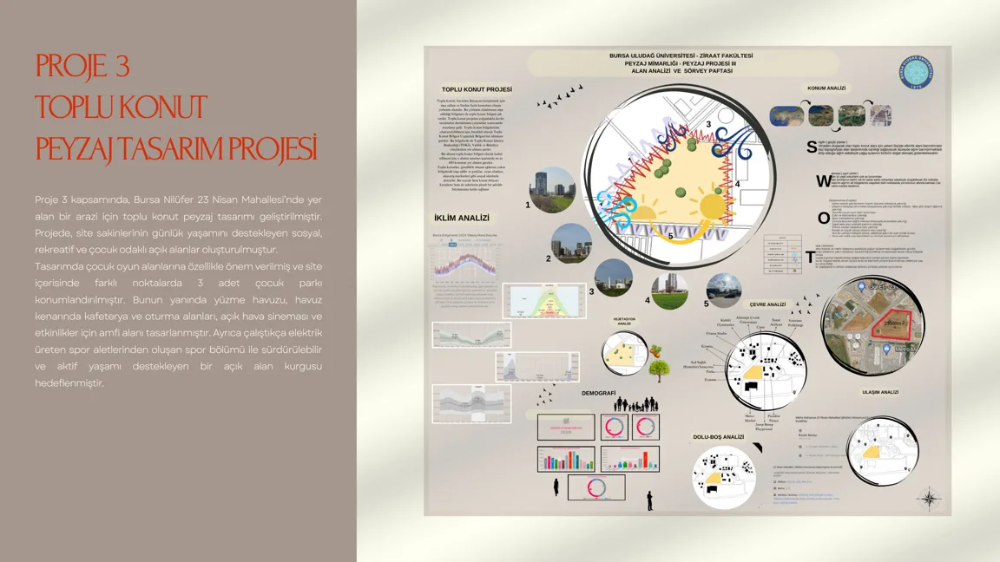
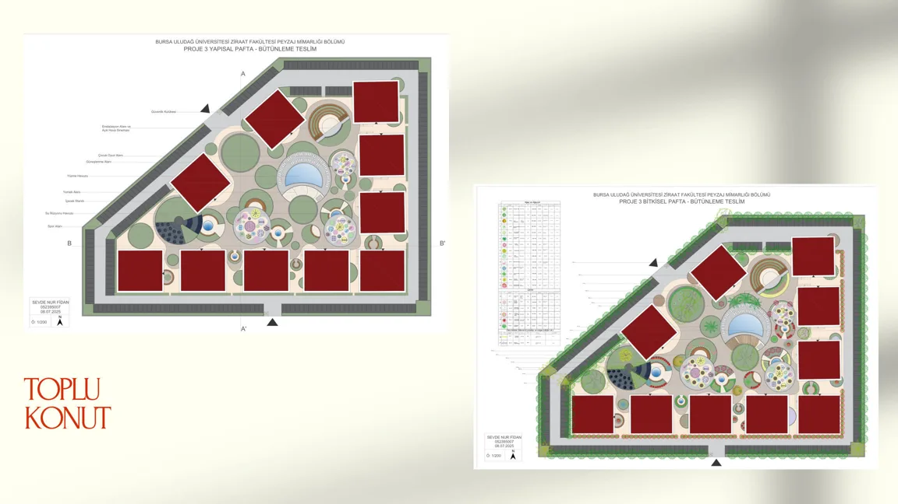
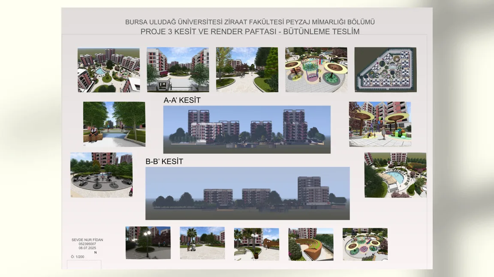

Toplu Konut Projesi - Bursa / Nilüfer
Bursa / Nilüfer

01 / Proje yaklaşımı
Çocuk oyun alanları, yüzme havuzu, açık hava sineması, sosyal alanlar ve aktif yaşam bileşenlerini bir araya getiren peyzaj projesi.
Çizginin
öteki tarafı.
Çizim ve görselleştirme arasında gezinerek projeye iki farklı açıdan bak.
 ÇizimGörselleştirme
ÇizimGörselleştirmeBüyüteç: çizime dokun veya üzerinde gezin. Ok tuşlarıyla da hareket ettirebilirsin.
Aydınger masası
Fikrin izini sür.
Çizim, görselleştirme ve orijinal portfolyo paftaları.
Çizimden
peyzaja.
Orijinal portfolyodan proje paftaları. Paftalardaki açıklamalar Türkçedir.


